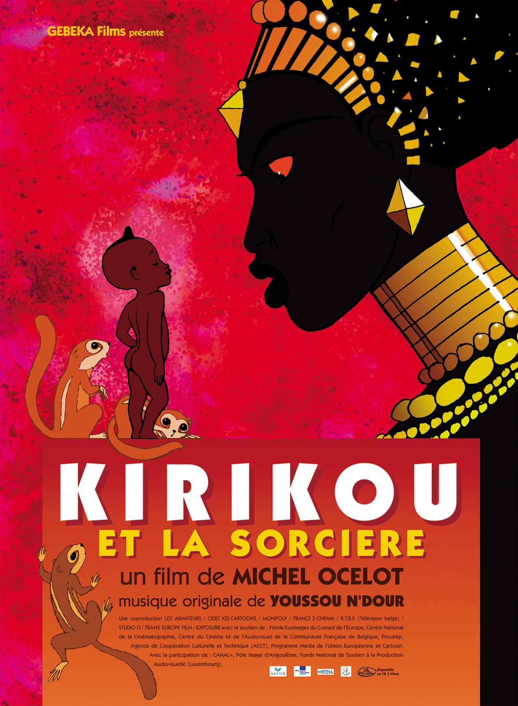
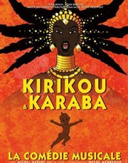

CINÉMA

- Date de reprise 26 décembre 2018 (version restaurée)
- Date de sortie 9 décembre 1998 (1h10min)
- De Michel Ocelot
- Avec Theo Sebeko, Antoinette Kellermann et Fezele Mpeka
- Genre Animation
- Nationalité franco-belgo-luxembourgeoise
THÉÂTRE

- Se déroule au Casino de Paris
- Du 15 novembre 2019 au 11 janvier 2020
- Durée de 2h environ
- Genre musique et danse
- De Michel Ocelot
- Mise en scène par Wayne Mcgregor
- Avec Legrand Bemba-Debert, Daniel Bilong, Fatoumata Diawara, SabPakora, Pookie
Les aventures du valeureux petit bonhomme sont adaptées pour la scènWayne McGregor et Michel Ocelot en font une comédie musicale originet universelle, aux refrains entraînants. Un hymne à l’Afrique etcourage.
De plus est disponible à la vente dès aujourd'hui le DVD du film en version remasterisé ainsi que le jeu vidéo officiel Kirikou pour PC.